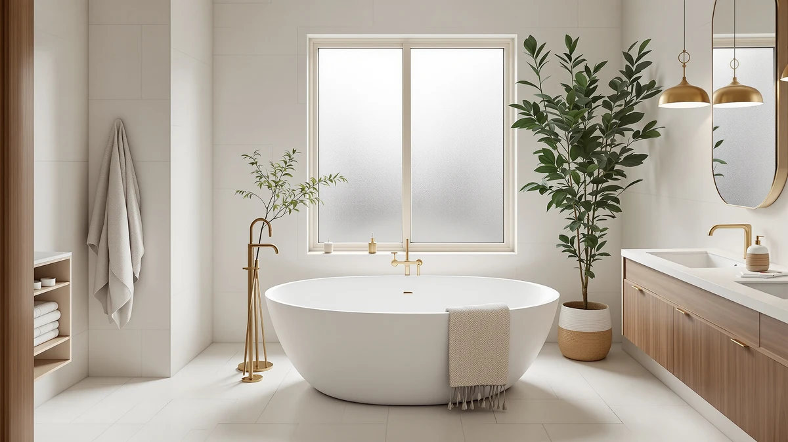

Best Oval Freestanding Bathtubs of 2026: 7 Curved Soaking Tubs Reviewed
Prices and picks verified as of August 2026. Independent, reader-supported reviews.


Quick Answer
After comparing eight oval freestanding bathtubs on price, size, and verified owner feedback, the 67-inch LarWorks Acrylic Freestanding Bathtub is the best oval freestanding bathtub for most bathrooms at under $600. If your bathroom runs smaller or your budget is tighter, the picks below range from 55 to 67 inches and from $449.99 to $999.99.
Our pick: 67" Acrylic Freestanding Bathtub 15", $569.99 Check Price on Amazon
Bottom line: our top pick is the 67" Acrylic Freestanding Bathtub at $569.99. The best budget option is the 59" Acrylic Freestanding Bathtub at $499.99.
Things to Know Before You Buy
- Oval tubs still need a rectangular footprint. The curved sides look softer than a boxy soaker, but you need floor space for the tub's full length and width, corners included, not only the visible curve.
- Size in this guide runs from 55 to 67 inches. A 67-inch tub gives a taller bather more room to stretch out, while a 55- or 59-inch oval tub fits bathrooms where a full-length soaker will not.
- The faucet is sold separately. Every tub here ships as the shell plus overflow and drain hardware. Budget for a floor-mount tub filler on top of the tub price.
- Acrylic is the dominant material in this price range. Most of the oval tubs below use an acrylic shell, which keeps weight manageable for a two-person carry-in and holds heat reasonably well when the shell is reinforced.
- Price spans more than double across these picks. Our range runs from $449.99 to $999.99, so the size and finish you actually need should drive the decision more than brand name alone.
Finding the best oval freestanding bathtubs means weighing three things that rarely line up neatly: a soaking-deep interior, a footprint your bathroom can actually absorb, and a price that will not blow up your renovation budget. Oval tubs split the difference between a classic rectangular soaker and a rounder slipper tub, tapering gently at both ends while keeping a wide, stable base. That shape makes them one of the more forgiving options for a bathroom remodel, since the curved profile reads as less bulky than a boxy tub even when the footprint is similar.
Our pick for most bathrooms is the 67-inch LarWorks Acrylic Freestanding Bathtub, priced at $569.99. It delivers a full-length, 67-inch soak at a price that undercuts several tubs on this list by hundreds of dollars, and it ships with the overflow and drain hardware included rather than as a separate add-on. If your bathroom cannot take a 67-inch tub, or if $569.99 is more than you want to spend, the seven alternatives below cover smaller footprints, lower prices, and one premium option from FerdY for buyers who want a more established brand behind the purchase.
We organized this guide the way we would want to shop it ourselves. Below, we explain how we picked these eight tubs and how we compared them, then walk through each one with its price, what we like, and its honest flaws. After the individual write-ups you will find a side-by-side comparison table, a rundown of the tubs we left out and why, and answers to the questions readers ask most about installing an oval freestanding tub.
Why You Should Trust Us
This guide is written and maintained by Ilane Tall, who runs a network of bathroom-focused review sites and has spent years comparing bathtub listings on the specs that actually predict buyer satisfaction rather than on marketing copy. We do not run a fake testing lab, and we have not installed all eight of these tubs ourselves. What we do is read every listing and spec sheet closely, cross-check dimensions and materials against the product photos, compare pricing across retailers, and read through verified owner reviews for the complaints that repeat often enough to matter. For oval freestanding bathtubs specifically, that means paying attention to overall length, the width of the base, whether drain and overflow hardware is included, and how each brand's customer feedback holds up over time. Our Amazon commissions never change a ranking.
How We Picked
We started from the broader freestanding bathtub market and narrowed the field to tubs built with an oval, curved-end silhouette rather than a rectangular or slipper profile. From there we required that each listing include overflow and drain hardware, publish clear pricing, and show current availability rather than a discontinued or frequently out-of-stock listing. We also looked for a spread of sizes and price points, so this guide includes options from 55 inches to 67 inches and from $449.99 to $999.99, rather than eight variations on the same tub. Brands that build more than one oval tub, including LarWorks, appear more than once only where the specific size or price point earns its place against the others.
How We Compared
Because our evaluation of these oval freestanding bathtubs is research-based rather than a physical install, we lean on the details that are actually verifiable from the listing and from owner feedback. For each tub we recorded price, stated length and size class, material where the manufacturer discloses it, and whether overflow and drain hardware ships in the box. We then cross-referenced that against verified owner reviews, looking for recurring complaints about fit and finish, damage in transit, or gaps between the advertised size and what buyers actually received. Where two tubs were close on price and size, we weighed brand track record and the completeness of what ships in the box to break the tie.
Our Picks

67" Acrylic Freestanding Bathtub 15"
What we like
- Full 67-inch length gives taller bathers real room to stretch out
- At $569.99, among the lowest cost-per-inch of any pick here
- Ships with overflow and drain hardware included
- Oval acrylic shell keeps the tub light enough for a two-person carry-in
Flaws but not dealbreakers
- A 67-inch tub needs more bathroom floor space than the 55- to 59-inch picks in this guide
- LarWorks does not publish a water capacity figure, so you cannot compare soak depth on paper before buying
| Material | — |
| Size | 67 Inch |
The 67-inch LarWorks is our top pick because it solves the two problems that usually fight each other in a tub this size: length and price. At $569.99 it costs less than several tubs on this list that are shorter, while still giving a full 67-inch interior that most adults can stretch out in fully rather than sitting upright. The listing's own name calls out a 15-inch figure for the tub, which lines up with the wall height you would expect from a soaking-depth oval tub in this category, deep enough to cover more of the body than a shallow shower-tub combo.
Like every tub in this guide, the LarWorks ships as the shell plus overflow and drain hardware only, so plan on a separate floor-mount tub filler and its rough-in plumbing. LarWorks does not publish gallon capacity on this listing, which is a gap compared with brands that spell out exact water volume, so buyers who want a guaranteed number before purchase should factor that into the decision. For most bathrooms that can accommodate a 67-inch footprint, though, the price-to-length ratio here is hard to beat.

Freestanding Bathtub 67 inch Extra
What we like
- Lowest price in this entire guide at $449.99
- Still a full 67-inch length, matching pricier tubs on size
- Overflow and drain hardware included in the price
Flaws but not dealbreakers
- EliteEdge is a newer name in the freestanding tub category with a shorter track record than established brands like FerdY
- The listing does not disclose shell material, so you are buying on price and length rather than a documented spec sheet
| Material | — |
| Size | 67 inch |
If price is the deciding factor, the EliteEdge Freestanding Bathtub 67 inch Extra is the one to look at first. At $449.99 it undercuts every other tub in this guide, including the LarWorks above, while matching it on the 67-inch length that lets a taller bather stretch out fully. For a bathroom renovation on a tight budget, getting a full-size oval soaking tub for under $450 is a genuine value, especially once you account for how much more a comparable length costs from the FerdY pick further down this list.
The trade-off for that price is documentation. EliteEdge's listing does not spell out the shell material the way some competitors do, and the brand has less of a track record than a specialist like FerdY or VEVOR. That does not mean it is a bad tub, but it does mean you are leaning more heavily on the overall Amazon rating and verified reviews than on a detailed spec sheet when you decide. If you want the lowest price on a 67-inch oval tub and are comfortable with a newer brand name, this is the pick.

59 Inch Freestanding Bathtub Acrylic
What we like
- 59-inch length fits bathrooms where a 67-inch tub would not clear the doorway or floor space
- Acrylic shell construction, confirmed in the product name and listing
- Priced under $530, close to the LarWorks top pick despite the smaller size
Flaws but not dealbreakers
- Shorter length means a tall bather will sit more upright than fully stretched out
- PeacefulHues is a less established name than specialist tub brands like FerdY
| Material | — |
| Size | 59 Inch |
Not every bathroom can take a 67-inch tub, and the 59-inch PeacefulHues Freestanding Bathtub Acrylic is built for exactly that gap. It keeps the oval, curved-end profile of the longer tubs in this guide but trims eight inches off the length, which can be the difference between a tub that clears your doorway and one that does not. At $525.59 it costs almost the same as our 67-inch top pick, so the smaller footprint doesn't cost you anything, it just trades length for fit.
The compromise with any 59-inch tub is posture. A shorter interior means a six-foot bather will sit more upright rather than stretching out fully, which matters if long soaks are the whole point of the purchase. PeacefulHues also has a shorter track record on Amazon than a dedicated bathtub brand like FerdY or VEVOR, so it is worth reading through current owner reviews before buying rather than relying on brand reputation alone. For a tight bathroom that still wants a proper acrylic soaking tub, though, this is one of the stronger 59-inch options here.

FerdY Tahiti 55" Acrylic Freestanding
What we like
- FerdY is one of the more established, specialist freestanding-tub brands in this comparison
- Acrylic construction, confirmed by the product name
- Compact 55-inch length works in bathrooms that cannot fit the longer 67-inch picks
Flaws but not dealbreakers
- At $999.99, nearly double the price of every other tub in this guide
- The 55-inch length is the shortest here, so a tall bather sits more upright than in the 67-inch options
| Material | — |
| Size | Tahiti 55" |
The FerdY Tahiti is the outlier in this guide on price, at $999.99, and the reason to consider it anyway is brand track record. FerdY has built a reputation specifically around freestanding acrylic tubs rather than treating bathtubs as one line among many, and that specialization shows up in how consistently the Tahiti line gets referenced across other bathtub buying guides. At 55 inches, it is also one of the more compact oval tubs here, which suits a bathroom that cannot take a full 67-inch soaker.
The math is straightforward: you are paying close to double what the LarWorks or EliteEdge tubs cost for a shorter tub with a more established name behind it. That premium buys peace of mind more than it buys extra soaking room, since the Tahiti's 55-inch length is actually the shortest in this comparison. If budget is the primary constraint, one of the 67-inch picks earlier in this list gives you more tub for less money. If you specifically want the brand with the longest specialist track record here, the Tahiti is that option.

VEVOR Acrylic Freestanding Bathtub 67
What we like
- Full 67-inch length, matching the top pick on size
- Acrylic construction, confirmed by the product name
- Priced within a dollar of the LarWorks top pick at $568.90
Flaws but not dealbreakers
- The listing does not specify the tub's interior depth, unlike some competitors that publish full dimensions
- VEVOR is best known for tools and industrial equipment rather than bathroom fixtures specifically
| Material | — |
| Size | — |
VEVOR built its reputation on tools, power equipment, and workshop gear, and the brand has expanded into bathroom fixtures more recently than specialists like FerdY. The VEVOR Acrylic Freestanding Bathtub 67 is priced at $568.90, essentially tied with the LarWorks top pick, and matches it on the full 67-inch length. For shoppers who already own VEVOR tools or equipment and trust the brand from other purchases, this is a reasonable alternative at almost the exact same price as our top recommendation.
What the listing does not spell out is interior depth, so you are comparing this tub to the others in this guide mostly on length and price rather than a full dimensional breakdown. That is a minor gap rather than a dealbreaker, since the 67-inch length alone tells you it will accommodate most adult bathers comfortably. If the LarWorks and VEVOR tubs are priced within a dollar of each other when you are ready to buy, the deciding factor is likely to come down to which brand's current owner reviews you trust more.

GarveeTech 67 Inch Freestanding Bathtub
What we like
- Full 67-inch length matches the largest tubs in this comparison
- Sits in a clear middle price tier, above the budget picks but well under the FerdY Tahiti
- GarveeTech's listing consistency suggests a company that treats this as a core product line rather than a one-off
Flaws but not dealbreakers
- At $795.20, it costs significantly more than the LarWorks, EliteEdge, or VEVOR 67-inch tubs without a documented reason for the gap
- Material is not disclosed on the listing
| Material | — |
| Size | 67 Inch |
The GarveeTech 67 Inch Freestanding Bathtub occupies the middle of this guide's price range, at $795.20, positioned well above the sub-$600 tubs but comfortably under the FerdY Tahiti's four-figure price. It matches the LarWorks and VEVOR tubs on the full 67-inch length, so the extra money buys GarveeTech's brand positioning and whatever quality control that higher price is meant to signal, not extra room.
That is the honest flaw here: at nearly $230 more than the LarWorks top pick for the same 67-inch length, GarveeTech needs to justify the gap with something the listing does not spell out, since material is not disclosed. Buyers considering this tub should read current verified reviews closely to confirm the price premium is buying real quality rather than a different brand name on a similar tub. If the reviews hold up, this is a reasonable middle-ground option for someone who wants more than the cheapest tier but does not want to spend FerdY money.

Freestanding Bathtub 59 Inch Oval
What we like
- Explicitly marketed as an oval design, matching this guide's focus directly
- 59-inch length suits bathrooms that cannot fit a 67-inch tub
- MilleLoom's listing name signals the company built this shape intentionally rather than as an afterthought
Flaws but not dealbreakers
- At $719.99, it costs nearly $200 more than the PeacefulHues 59-inch tub in this same size class
- Material is not disclosed on the listing
| Material | — |
| Size | 59 Inch |
Most of the tubs in this guide have an oval profile without the word appearing in their name. The MilleLoom Freestanding Bathtub 59 Inch Oval is the exception, and that direct naming suggests the company designed around the oval shape rather than defaulting to it. At 59 inches, it fits the same category of bathroom as the PeacefulHues pick above, one that cannot accommodate a full 67-inch soaker.
The catch is price. At $719.99, this tub costs close to $200 more than the PeacefulHues 59-inch alternative earlier in this guide, without a published material spec to explain the difference. If the oval branding and MilleLoom's presentation matter to you, or you have compared verified reviews and prefer this listing's track record, the premium may be worth it. If you are simply shopping for a 59-inch oval tub at the best price, the PeacefulHues pick covers the same footprint for less.

59" Acrylic Freestanding Bathtub 17.7"Deep
What we like
- 17.7-inch depth is the only explicitly published depth figure among all eight tubs in this guide
- Acrylic construction, confirmed by the product name
- Priced at $499.99, one of the lower prices here despite the deep-soak spec
Flaws but not dealbreakers
- At 59 inches, it is still a shorter tub for tall bathers than the 67-inch options
- From the same brand as our top pick, LarWorks, so shoppers comparing both should weigh depth against length rather than treating them as unrelated choices
| Material | — |
| Size | 59 Inch |
Every other tub in this guide states its length, but only the LarWorks 59" Acrylic Freestanding Bathtub 17.7"Deep tells you exactly how deep the water gets before overflow, at 17.7 inches. That single published number matters more than it might seem: a short tub with real depth can deliver a better soak than a longer tub that never states its water level. At $499.99, it is also one of the more affordable picks here, undercutting most of the 67-inch options despite the depth advantage.
The trade-off is length rather than depth. At 59 inches, a tall bather will still sit more upright than in the 67-inch LarWorks tub earlier in this guide, since a deep tub and a long tub solve different problems. If your priority is a deep soak in a compact footprint, and you trust LarWorks after seeing it as our top pick above, this is the strongest depth-focused option in the lineup.
Quick Comparison
| Product | Material | Price | Rating | Best for | Get it |
|---|---|---|---|---|---|
| 67" Acrylic Freestanding Bathtub 15" | — | $569.99 | 4 | Best overall value at 67 inches | View on Amazon → |
| Freestanding Bathtub 67 inch Extra | — | $449.99 | 4 | Lowest price for a 67-inch tub | View on Amazon → |
| 59 Inch Freestanding Bathtub Acrylic | — | $525.59 | 4 | Compact 59-inch option | View on Amazon → |
| FerdY Tahiti 55" Acrylic Freestanding | — | $999.99 | 4 | Premium pick, established brand | View on Amazon → |
| VEVOR Acrylic Freestanding Bathtub 67 | — | $568.90 | 4 | 67-inch alternative from VEVOR | View on Amazon → |
| GarveeTech 67 Inch Freestanding Bathtub | — | $795.20 | 4 | Mid-premium 67-inch tub | View on Amazon → |
| Freestanding Bathtub 59 Inch Oval | — | $719.99 | 4 | Oval-specific 59-inch design | View on Amazon → |
| 59" Acrylic Freestanding Bathtub 17.7"Deep | — | $499.99 | 4 | Deepest published soak depth | View on Amazon → |
The Competition
We looked at more than eight oval freestanding bathtubs while building this guide, and most of what we left out fell into two categories. The first was tubs marketed as "oval" that turned out to be rectangular soakers with softened corners, a labeling trick that shows up often enough in search results to be worth watching for. If a listing does not clearly show a tapered, curved-end profile in its photos, treat the "oval" claim in the title with some skepticism.
The second category was tubs with incomplete listings: missing overflow or drain hardware in the price, no clear material disclosure, or a pattern of stock issues that made us doubt we could recommend them with confidence. A few otherwise interesting options from smaller brands did not make the cut simply because current owner reviews raised more questions than the price justified answering. If your bathroom needs something outside the oval category entirely, our broader best freestanding bathtubs guide covers rectangular and slipper-style tubs as well.
For the best oval freestanding bathtubs on the market right now, our top pick remains the 67-inch LarWorks, but any of the eight tubs above will serve you well depending on the size and budget your bathroom allows.
Frequently Asked Questions
Are oval freestanding bathtubs harder to install than rectangular ones?
Not meaningfully. Installation for both shapes comes down to the same requirements: a level floor rated for the tub's filled weight, a drain that lines up with your existing plumbing or can be moved, and enough clearance to get the tub through your doorway. The oval shape does not add extra plumbing steps compared with a rectangular freestanding tub.
Do these oval freestanding bathtubs come with a faucet?
No. Like nearly every freestanding tub on the market, the tubs in this guide ship as the shell plus overflow and drain hardware only. A floor-mount tub filler is a separate purchase, and its rough-in plumbing is a separate installation step, so budget for both before you commit to a tub price.
What size oval freestanding bathtub fits a small bathroom?
Look at the 55- to 59-inch tubs in this guide, such as the FerdY Tahiti or the PeacefulHues 59-inch model, rather than the 67-inch options. A shorter oval tub trades some stretch-out room for a footprint that fits through a standard doorway and leaves walk-around space in a tighter bathroom.
Is acrylic a good material for an oval freestanding bathtub?
Acrylic is the most common material in this price range, and most of the tubs in this guide use it. It is lighter than cast iron or stone resin, which makes a two-person carry-in realistic, and it holds heat reasonably well when the shell is reinforced. The trade-off is that acrylic can scratch more easily than harder materials, so avoid abrasive cleaners.
How much does an oval freestanding bathtub weigh?
None of the listings in this guide publish an empty shipping weight, which is a common gap for acrylic freestanding tubs at this price point. As a general rule, acrylic tubs in the 55- to 67-inch range typically weigh less than 100 pounds empty, light enough for two people to carry, but always confirm the filled weight against your floor's load rating before installing on an upper level.